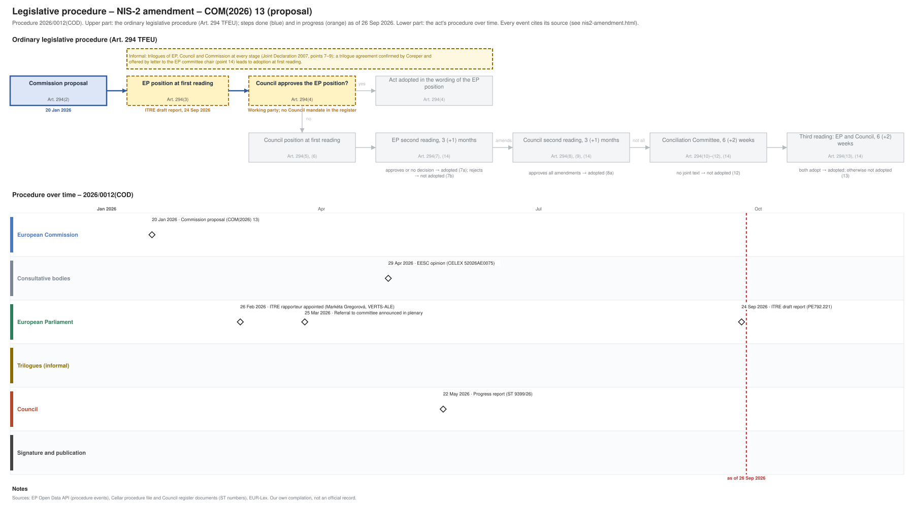

← Regulation timeline › NIS-2 amendment › Legislative procedure · All procedures
Procedure 2026/0012(COD), ongoing, as of 06 Oct 2026. Drawing: SVG · PNG · PDF (A3) · draw.io · Page as Markdown: nis2-amendment.md
| Stage | EP committee stage |
|---|---|
| Parliament | draft report 24 Sep 2026 |
| Council | working party, latest document 02 Jul 2026 |
| Latest activity | 24 Sep 2026 · European Parliament: ITRE draft report (PE792.221) |
| Next steps | EP: amendments and committee vote on the report and mandate; Council: working party towards a negotiating mandate |

| Committee | Role | Rapporteur | Shadow rapporteurs |
|---|---|---|---|
| ITRE Industry, Research and Energy | Responsible | Markéta Gregorová (Greens/EFA), appointed 26 Feb 2026 | Tomas Tobé (EPP), Jens Geier (S&D), Aleksandar Nikolic (PfE), Diego Solier (ECR), Morten Løkkegaard (Renew), Marc Botenga (The Left), Markus Buchheit (ESN) |
| IMCO Internal Market and Consumer Protection | Opinion | Henrik Dahl (EPP), appointed 28 Apr 2026 | Maria Guzenina (S&D), Michał Dworczyk (ECR), Morten Løkkegaard (Renew) |
| LIBE Civil Liberties, Justice and Home Affairs | Opinion: decided not to give an opinion | – | – |
Source: EP Open Data API (participations) and the Legislative Observatory (joint committee, opinions declined); names link to each Member's page on the EP website. The API names no committee for shadow rapporteurs; they are assigned by the EP's order of participants, which groups each committee.
| Date | Actor | Event | Document | Source |
|---|---|---|---|---|
| 2026-01-20 | European Commission | Commission proposal (Art. 294(2) TFEU) | COM(2026) 13 · en.md de.md | Cellar (CELEX 52026PC0013) |
| 2026-02-02 | Council | Horizontal Working Party on Cyber Issues: New Cybersecurity package: a) Evaluation report: – Presentation by … | CM 1440/26 REV 1 | Council register, CM 1440/26 REV 1 (notice of meeting and provisional agenda) |
| 2026-02-26 | European Parliament | ITRE rapporteur appointed (Markéta Gregorová, VERTS-ALE) | EP procedure file | EP Open Data API, procedure 2026-0012 (participation RAPPORTEUR) |
| 2026-03-25 | European Parliament | Referral to committee announced in plenary | EP procedure file | EP Open Data API, procedure 2026-0012 (REFERRAL) |
| 2026-04-29 | Consultative bodies | EESC opinion | CELEX 52026AE0075 | Cellar procedure file 2026/12 |
| 2026-05-13 | Council | Progress report | ST 9121/26 · en.md | Council register document ST 9121/26 (interinstitutional files 2026/0011(COD), 2026/0012(COD)); Cellar links it to procedure 2026/0011(COD) only |
| 2026-05-22 | Council | Progress report | ST 9399/26 · en.md de.md | Council register document ST 9399/26 (interinstitutional files 2026/0011(COD), 2026/0012(COD)); Cellar links it to procedure 2026/0011(COD) only |
| 2026-05-28 | Council | Horizontal Working Party on Cyber Issues - attachés: Examination of the Proposal (5627/26 + ADD 1) | CM 2950/26 | Council register, CM 2950/26 (notice of meeting and provisional agenda) |
| 2026-09-24 | European Parliament | ITRE draft report | PE792.221 · en.md de.md | EP Open Data API, procedure 2026-0012 (COMMITTEE_TABLING_REPORT) |
Every document the Council register, the EU database of the Parliament of Austria or the EP lists for the procedure, with its state: public documents link to the official file; documents that are not public link to their entry in the Austrian database where there is one (metadata only). Status: public; not public; not public, leak available (an unofficial copy is known to circulate outside the institutions; it is neither published nor quoted here). Released: when a document listed as not public was released, by the date of the Council's public PDF (a technical date) or else the day our daily check found it public.
| Date | Document | Kind | Subject | Status | Released | Text |
|---|---|---|---|---|---|---|
| 2026-01-22 | ST 5611/26 | council-transmission | Proposal for a REGULATION OF THE EUROPEAN PARLIAMENT AND OF THE COUNCIL on the European Union Agency for Cybersecurity (ENISA), the European cybersecurity … | public | – | – |
| 2026-01-22 | ST 5611/26 ADD 1 | council-transmission | ANNEXES to the Proposal for a Regulation of the European Parliament and of the Council on the European Union Agency for Cybersecurity (ENISA), the European … | public | – | – |
| 2026-01-22 | ST 5611/26 ADD 2 | council-transmission | COMMISSION STAFF WORKING DOCUMENT EXECUTIVE SUMMARY OF THE IMPACT ASSESSMENT REPORT Accompanying the documents Proposal for a Regulation of the European … | public | – | – |
| 2026-01-22 | ST 5611/26 ADD 3 | council-transmission | REGULATORY SCRUTINY BOARD OPINION - Cybersecurity Act Review | public | – | – |
| 2026-01-22 | ST 5611/26 ADD 4 | council-transmission | COMMISSION STAFF WORKING DOCUMENT IMPACT ASSESSMENT REPORT Accompanying the documents Proposal for a Regulation of the European Parliament and of the Council … | public | – | – |
| 2026-01-22 | ST 5627/26 | council-transmission | Proposal for a DIRECTIVE OF THE EUROPEAN PARLIAMENT AND OF THE COUNCIL amending Directive (EU) 2022/2555 as regards simplification measures and alignment with … | public | – | – |
| 2026-01-22 | ST 5627/26 ADD 1 | council-transmission | ANNEX to the Proposal for a DIRECTIVE OF THE EUROPEAN PARLIAMENT AND OF THE COUNCIL amending Directive (EU) 2022/2555 as regards simplification measures and … | public | – | – |
| 2026-02-10 | WK 2167/26 | council-note | Presentation by the Commission | not public* | – | – |
| 2026-02-17 | ST 5611/26 ADD 3 REV 1 | council-transmission | REGULATORY SCRUTINY BOARD OPINION - Cybersecurity Act Review | public | – | – |
| 2026-03-19 | ST 7519/26 | council-note | Joint opinion of the European Data Protection Board and European Data Protection Supervisor | public | – | – |
| 2026-03-24 | ST 7558/26 | council-note | Optional consultation of the Committee of the Regions | public | 2026-10-02 | – |
| 2026-04-20 | ST 8340/26 | council-note | Opinion on the application of the Principles of Subsidiarity and Proportionality - Cover note from the Spanish Parliament | not public* | – | – |
| 2026-04-29 | CELEX 52026AE0075 | opinion | Opinion of the European Economic and Social Committee a) Proposal for a Regulation of the European Parliament and of the Council on the European Union Agency … | public | – | – |
| 2026-05-06 | ST 8980/26 | council-note | Opinion of the European Economic and Social Committee | public | – | – |
| 2026-05-13 | ST 9121/26 | council-progress-report | Progress report Our summary: Joint progress report of the Cyprus Presidency of 13 May 2026 on CSA2 and the NIS-2 amendment; it is not a Council position. On the NIS-2 amendment it only records that the read-through of the simplification measures was to start at the end of May 2026; the substance concerns CSA2 (see the CSA2 procedure page). Updated 2026-10-04: Reviewed against the later progress report ST 9399/26 of 22 May 2026, the version of the same report for Coreper and the Council: same state of play, with added background (Council conclusions on ENISA of 6 December 2024, the 'One Europe, One Market' roadmap of 24 April 2026). No change to the findings. (source: ST 9399/26) | public | 2026-10-02 | en |
| 2026-05-13 | ST 9257/26 | council-note | Reasoned opinion on the application of the Principles of Subsidiarity and Proportionality - Cover note from the Italian Chamber of Deputies | not public* | – | – |
| 2026-05-19 | ST 9358/26 | council-note | Reasoned opinion on the application of the Principles of Subsidiarity and Proportionality - Cover note from the French Senate | not public* | – | – |
| 2026-05-22 | ST 9399/26 | council-progress-report | Progress report | public | – | en de |
| 2026-05-29 | WK 7723/26 | council-note | Consolidated informal amendments | public | 2026-10-02 | – |
| 2026-06-01 | WK 7789/26 | council-note | Proposal for a Directive amending Directive (EU) 2022/2555 as regards simplification measures and alignment with the Cybersecurity Act 2/Template for the … | public | 2026-10-02 | – |
| 2026-06-02 | ST 9972/26 | council-note | Reasoned opinion on the application of the Principles of Subsidiarity and Proportionality - Cover Note from the Senate of the Parliament of the Czech Republic | not public* | – | – |
| 2026-06-30 | WK 9618/26 | council-note | Non-paper regarding an European Cyber Posture Framework Built on Existing National Experience, Mutual Recognition and Progressive Convergence | public | 2026-10-02 | – |
| 2026-07-02 | WK 9750/26 | council-note | Comments from Austria and other Member States | public | 2026-10-02 | – |
| 2026-09-24 | PE792.221 | ep-draft-report | DRAFT REPORT on the proposal for a directive of the European Parliament and of the Council amending Directive (EU) 2022/2555 as regards simplification measures … | public | – | en de |
* Not public: the registers are checked again daily until the document is released; last check 2026-10-09.
Unofficial Markdown conversions for reading, searching and project folders; only the official document is authentic. "Read" opens the rendered text on GitHub, where a link to a provision (#art-13, #rec-12, #annex-i) jumps to it.
| Date | Stage | Document | Markdown | Read |
|---|---|---|---|---|
| 2026-01-20 | com-proposal | CELEX 52026PC0013 | en de | GitHub |
| 2026-05-13 | council-progress-report | ST 9121/26 | en | GitHub |
| 2026-05-22 | council-progress-report | ST 9399/26 | en de | GitHub |
| 2026-09-24 | ep-draft-report | PE792.221 | en de | GitHub |